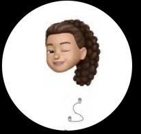
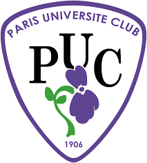
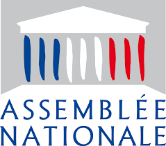
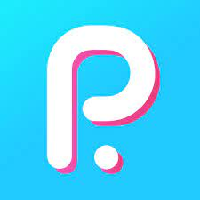
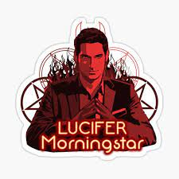

Camille Desmurs

Hello everyone, welcome to my profile page. My name is Camille and I am currently a first year BBA student at ESSEC.
I am fascinated by sport and the world around sport but also by music, series and books. I used Le Wagon thanks to my school to learn how to code because I think it is an important thing to know for the future. At the beginning I was pretty anxious about coding but now I love it!
Sports

I am a hudge fan of sports, I have been playing tennis for 15 years at PUC
Sport plays an important role in student's life. As it develops our physical and mental health. For me, adults should include it in their daily life. Sports are not only used for physical and mental health but also to create a high discipline and rigor in a person. When I was a child, I was playing tennis to make my career in it.
My professional experiences
 
I have done a one week internship at Assemblee Nationale, in 2017 during my last year of collège.
I am also a Brand Developer at Pumpkin since 2 months.
An experience that marked me a lot, it was when I was an ambassador against harassment in my high school for 3 years. It was at Lycee Rodin.
My Skills
Languages (English/Spanish/French/Arabic)
Pack Office (Excel,Word,PowerPoint...)
Sports (Tennis,Football,Basketball)
Music
I love listening to music. Music is one of the most important thing in my life. It is personal but, without music, my life would be absolutely empty.But that is not all, I have played piano since I was 10. Listening to and playing different types of music helps me to relax and it can also motivate me sometimes.I don't have a particular style of music, I listen to all types of music. I love listening to music on my way to school. I believe music has the ability to convey all sorts of emotion. Whether the emotion is joy and happiness or sadness, music shows it. For me, what music is able to create is amazing.
Series

I am an absolute fan of Netflix, I am a really good user. I am very curious about all the types of series. I have Netflix since 4 or 5 years and to be honest, at the begining, I didn't realize immediatly that I can actually learn or at least improve my english thanks to series. I have seen a real improvements in my communication skills.
Association
Since the beginning of the year, I am a member of an association at ESSEC named Plong'Essec. .I don't have a specific role in the association because of then pandemic but I have participaded to the creation of a seminar about posidonia at the end of the year 2020. But this is not all, Since I am 10, I practice scuba-diving with my father every holidays at Club Sous l'Eau.